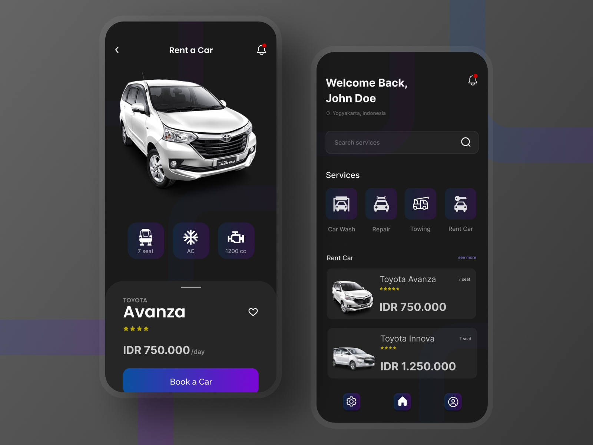
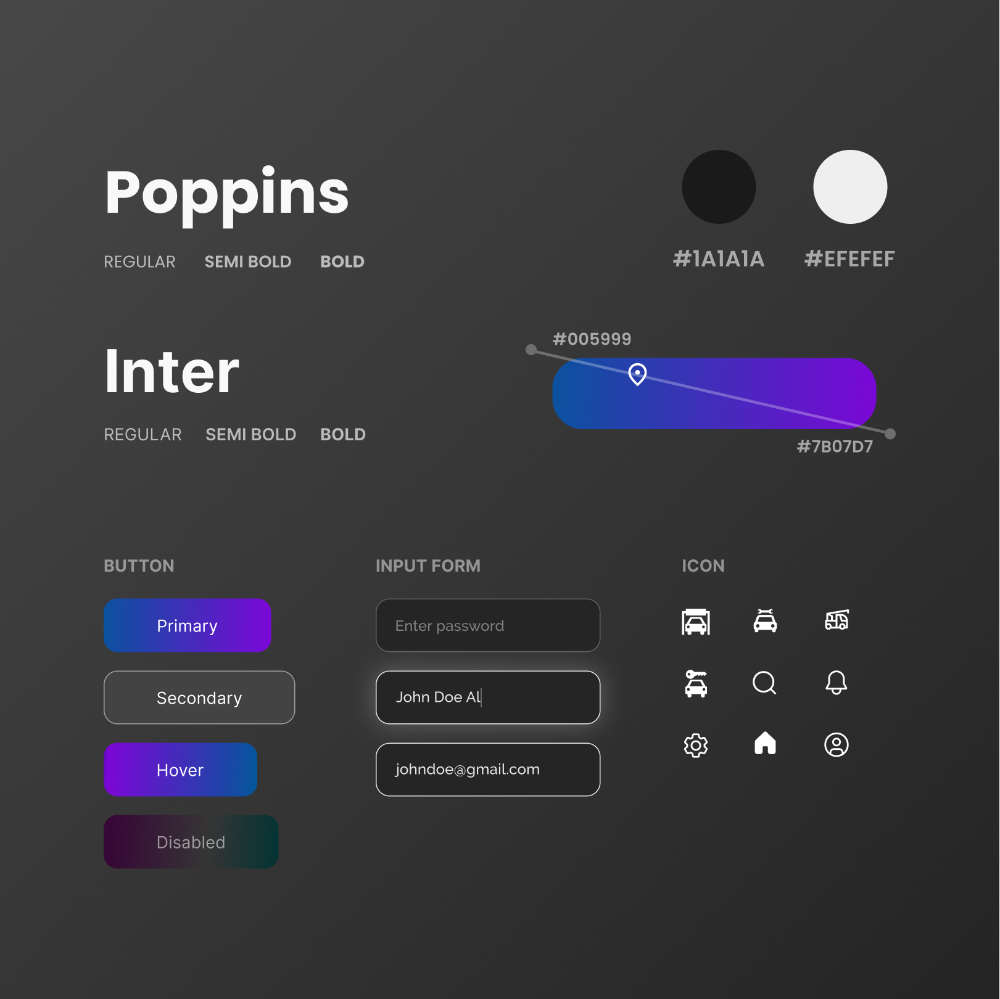

Fayza Car Services App (Exploration)

FCS app(Fayza Car Services) is a mobile application that has 4 main features, namely car wash, repair, car towing, and car rental. The owner of this app is a creative mechanic who loves art.
PROBLEM & SOLUTION
A lot of people don't like waiting. As is the case with car washes or car repairs, they don't like waiting in line. Therefore, car repair shops must think of a solution for how customers don't have to wait in queues for a long time. The solution is already present in this FCS app. FCS offers repair and car wash orders, so customers don't have to wait in long queues.
ELEMENT
This FCS app uses dark mode which means it uses a dark background. The gradient on the buttons reflects elegance and professionalism, but still creative. This app completely uses the face font of the sans-serif type.
